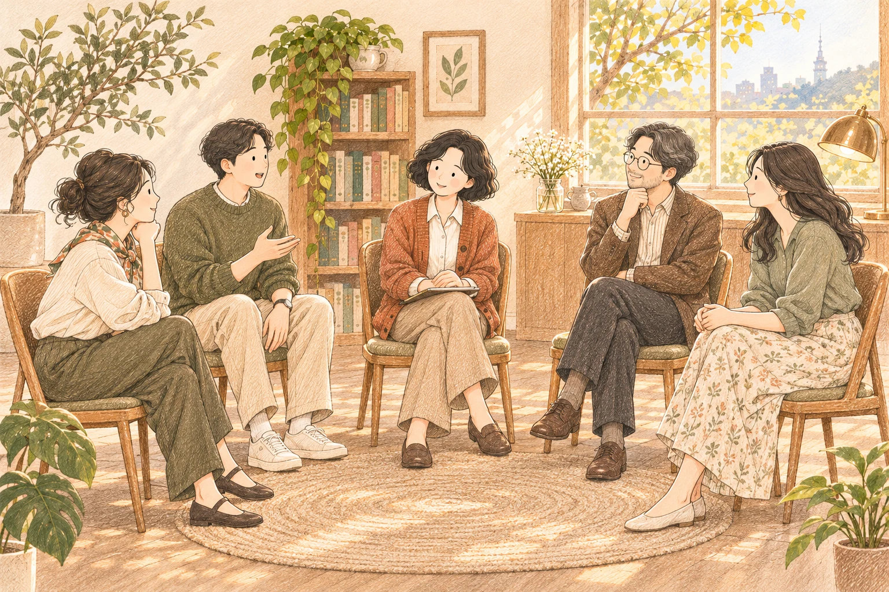
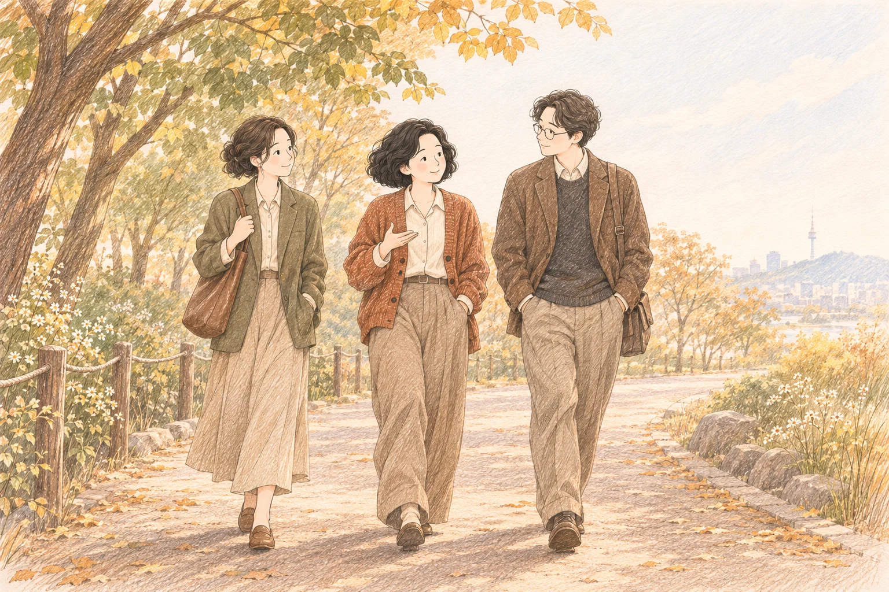

농담이 전하는 초대의 마음
함께 앉아,
마음을 나누고 싶습니다.
안녕하세요. 모두의 심리상담사 농담입니다.
여러분과 마음을 나누고 싶습니다.
마음속에 오래 머물러 있던 고민도, 누군가에게 나누고 싶었던 삶의 이야기도 함께 꺼내 놓고 대화하는 자리를 마련하려 합니다. 서로의 이야기에 귀 기울이며, 나와 타인 그리고 삶을 조금 더 이해해 가는 시간이 되었으면 합니다.
대구모두심리상담센터에서 시작하는 ‘모두의 집단상담’에 여러분을 초대합니다.
나를 이해하고 삶의 의미를 발견하며, 새로운 가능성을 찾아가는 시간. 그 여정을 여러분과 함께하고 싶습니다.

실존치료 · Existential Therapy
각자의 삶을 만나고,
서로의 경험을 나눕니다.
이 집단상담은 실존치료(Existential Therapy)를 바탕으로 진행됩니다.
실존치료는 인간이 자신의 삶을 어떻게 경험하고 있는지, 나는 누구인지, 어떤 삶을 살아가고 싶은지, 나에게 진정한 의미와 가치는 무엇인지 함께 탐색하는 접근입니다.
우리는 살아가면서 선택의 순간을 만나고
관계 속에서 기쁨과 상처를 경험하며,
때로는 상실과 불안, 삶의 공허함과 마주하기도 합니다.
이 집단에서는 정해진 답이나 해결책을 찾기보다
각자의 경험을 나누고, 서로의 다름을 이해하며,
자신의 삶을 조금 더 깊이 바라보는 시간을 갖고자 합니다.
마음을 나누고, 서로에게 귀 기울이며
이런 분들과
함께하고 싶습니다.
저마다의 마음과 삶의 이야기를
함께 나누는 자리에 초대합니다.
마음에 닿는 문장을 눌러 표시해 보세요.
나 자신과 나의 경험을 이해하고 싶은 분
나와 타인의 관계를 이해하고 싶은 분
나의 선택과 삶의 방향을 찾고 싶은 분
삶의 한계와 현실을 마주하고 싶은 분
삶의 의미와 목적을 찾고 싶은 분
우리가 함께할 시간
서로의 이야기에 귀 기울이고,
마음을 나누는 시간.
이 집단상담은 정답을 알려주거나 누군가의 삶을 대신 결정해 주는 자리가 아닙니다.
서로의 경험과 이야기에 귀 기울이고
자신의 감정과 생각, 신체 감각과 행동을 있는 그대로 바라보며
나와 타인 그리고 삶을 새롭게 이해해 가는 시간입니다.
때로는 혼자서는 발견하지 못했던 자신의 모습을 다른 사람의 이야기를 통해 만나기도 하고,
서로의 다름을 이해하는 과정에서 새로운 시각과 가능성을 발견하기도 합니다.

함께하고 싶은 마음을 담아
당신의 이야기를 듣고,
함께 마음을 나누고 싶습니다.
나 자신을 이해하고
타인과 연결되며
앞으로 어떤 삶을 살아가고 싶은지 함께 탐색하는 여정에
여러분을 초대합니다.
모두의 심리상담사 농담 드림